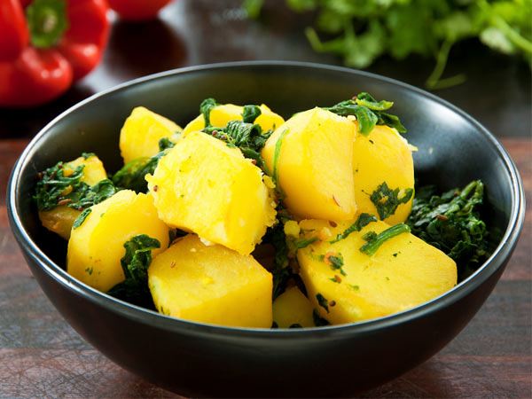

Ingredients:
1)250 gms Aloo (Potatoes)
2)2 tbsp Oil
3)1/4 tbsp Turmeric powder
4)2 nos. Green chillies
5)4-5 nos. Curry leaves
6)1/2 tsp Mustard seeds
7)Salt To Taste
How to make aloo subzi:
1.Boil, peel and cube the potatoes. Heat oil in a pan, add the mustard seeds, slit green chillies, curry leaves, fry till the seeds start spluttering, add salt and turmeric powder and cubed aloo (potatoes), add little water so that the aloo (potatoes) absorb the masala and simmer for 4-5 minutes till well blended. Serve the aloo sabzi hot with roti or paratha.
2.For a different taste in aloo sabzi , you can substitute mustard seeds with cumin seeds.